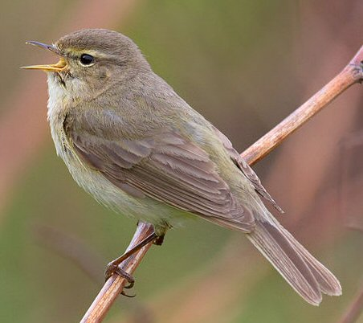

Thursday, April the 10th, 2014
back to: title, date or indexes

Chapter Four of Mr Key's Book Of Birds, a work in progress.
The chiffchaff is a type of bird. It could be said to be a difficult little bird, for reasons which I shall explain. The chiffchaff is almost exactly the same type of bird as the willow warbler, and the difficulty arises because I have already written about the willow warbler. I am not trying to claim that these two birds are identical in all particulars, as that would be foolish, but quite honestly they are so alike that only the most acutely observant among you would be able to tell the difference. It would not surprise me to learn that even a chiffchaff might mistake a willow warbler for a chiffchaff, and vice versa, so what hope can there be for us humans?
Some might argue that birds' organs of perception act in ways wholly alien to us, and that their apprehension of the world around them is, as a consequence, so vastly different to ours that a chiffchaff will always recognise the chiffchaffness of another chiffchaff, and the willow warblerness of a willow warbler. It would be fruitless to argue the case. All I am trying to say is that as far as we humans are concerned there is precious little difference between the two birds.
So, having devoted a chapter to the willow warbler, I do not want to risk repeating myself by chuntering on about the chiffchaff. Christ knows, the repetitions involved in writing about birds are numerous enough. Beaks, feathers, wings, talons … you are already more than familiar with them, and we have not yet started to consider such things as slashed and savaged semi-digested fieldmice and voles, and other gruesome dishes from the birdy recipe book.
Yet while some repetitiveness is unavoidable in a work such as this, if the reader is to gain a clear understanding of all the different birds, I do not want to type out the same old baloney over and over again. Things would be much easier if similar or in some cases identical types of birds had not been given several different names. Don't get me started on the green plover, for example. But we must deal with the world as it is, not as we wish it to be in our wildest dreams. This earthbound realism is particularly—and paradoxically—necessary in the case of birds, which, in the main, tend not to be earthbound at all. One of the first things the amateur will notice about birds is that God has granted them the power of flight. There are of course exceptions, such as the ostrich, a huge and very stupid bird which is tethered by gravity to the earth as decisively as you and me. But the chiffchaff, like the majority of birds, can fly.
Anything else that might usefully be said about the chiffchaff I have already covered in the chapter on the willow warbler. You can trust me on this. It goes without saying that I know more about birds than you do. After all, I am the writer and you—whoever you are—are the reader, and it seems plain as the peas on my fork that if you already knew much about birds you would not feel the need to read this book. You would be out tramping the countryside, a pair of binoculars dangling around your neck, pointing at our feathered friends and showing off by exclaiming, to your companion, “Oh look, Constance, a chiffchaff!”, suspecting that poor Constance thought she was peering at a willow warbler.
Hooting Yard on the Air, April the 10th, 2014 : “The Robin” (starts around 22:47)
Hooting Yard on the Air, June the 28th, 2018 : “The Robin” (starts around 19:39)